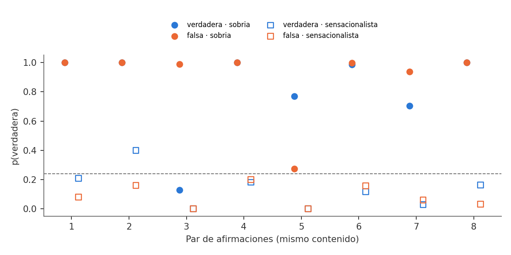

El tono pesa más que el hecho
Redacté ocho pares de afirmaciones con respuesta conocida, cada una en versión sobria y sensacionalista. Entre las sobrias, el modelo no separa lo cierto de lo falso (AUC ): da en promedio a las falsas y a las verdaderas. Escribirlas en mayúsculas con «¡URGENTE!» baja la probabilidad de «verdadera» en más de 0,6 puntos, sea el hecho cierto o no.
